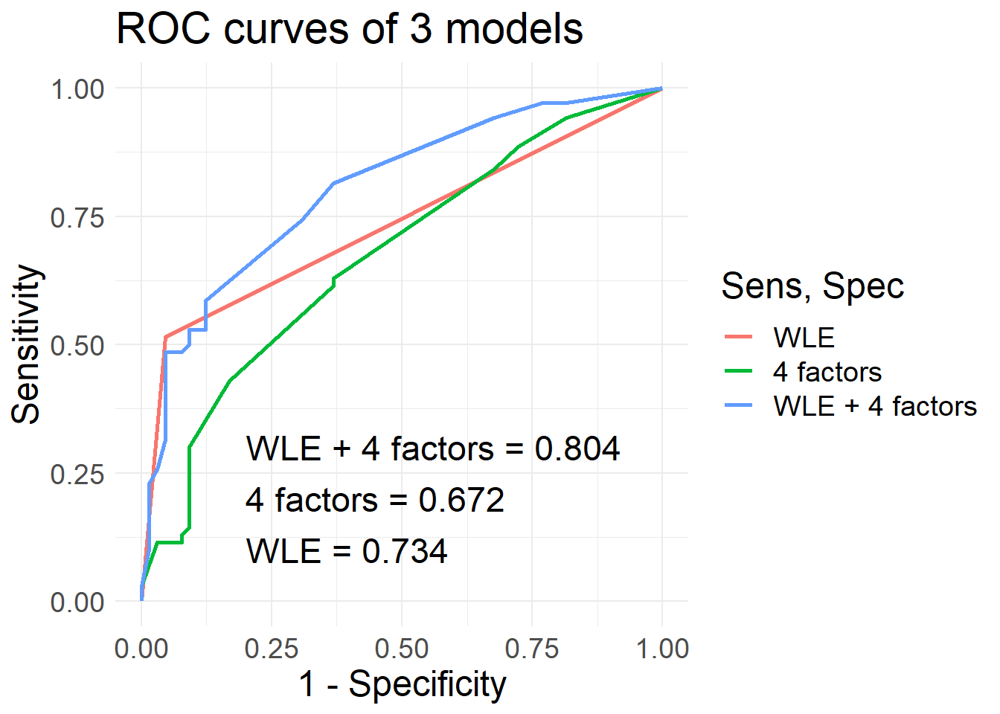
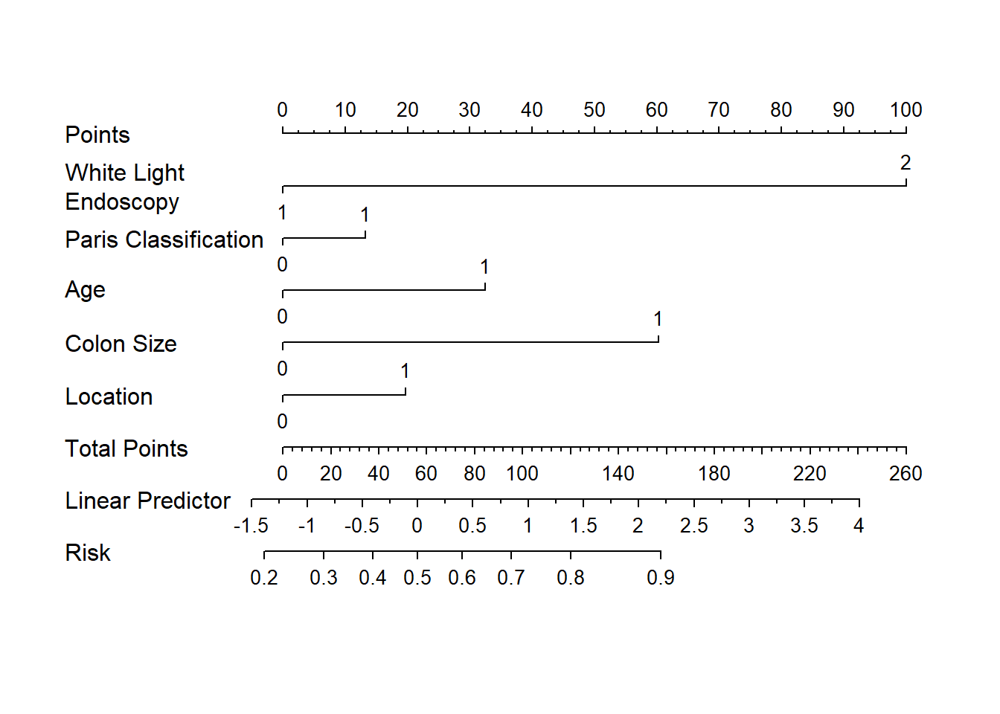
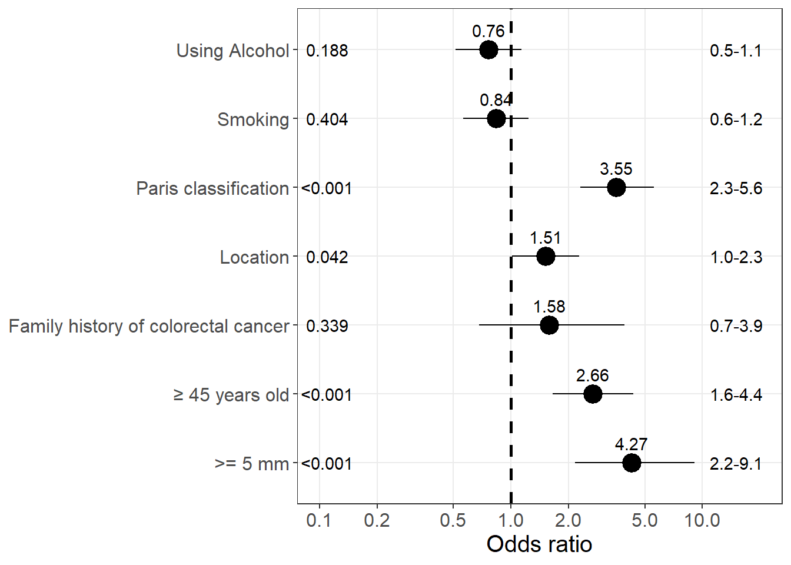
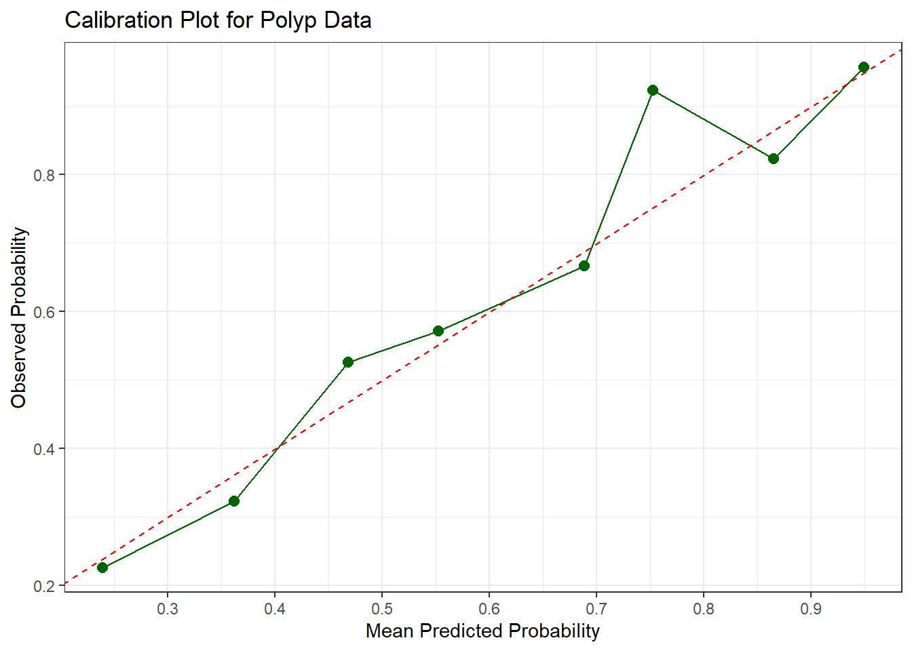
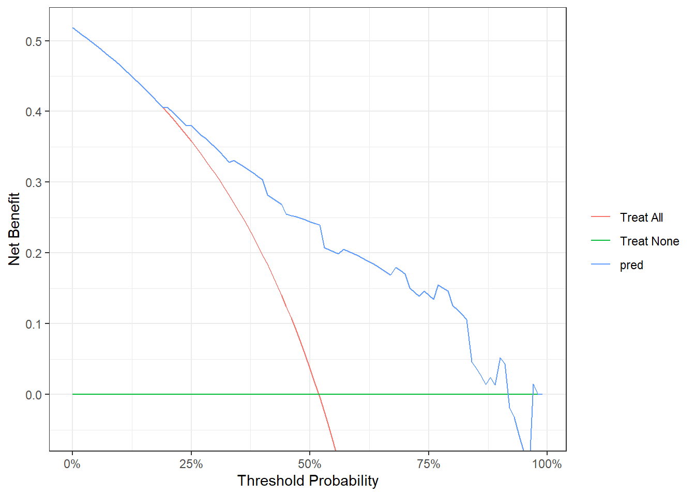

Last updated: 2023-09-07
Checks: 6 1
Knit directory: Polyp/
This reproducible R Markdown analysis was created with workflowr (version 1.7.0). The Checks tab describes the reproducibility checks that were applied when the results were created. The Past versions tab lists the development history.
The R Markdown is untracked by Git. To know which version of the R
Markdown file created these results, you’ll want to first commit it to
the Git repo. If you’re still working on the analysis, you can ignore
this warning. When you’re finished, you can run
wflow_publish to commit the R Markdown file and build the
HTML.
Great job! The global environment was empty. Objects defined in the global environment can affect the analysis in your R Markdown file in unknown ways. For reproduciblity it’s best to always run the code in an empty environment.
The command set.seed(20230810) was run prior to running
the code in the R Markdown file. Setting a seed ensures that any results
that rely on randomness, e.g. subsampling or permutations, are
reproducible.
Great job! Recording the operating system, R version, and package versions is critical for reproducibility.
Nice! There were no cached chunks for this analysis, so you can be confident that you successfully produced the results during this run.
Great job! Using relative paths to the files within your workflowr project makes it easier to run your code on other machines.
Great! You are using Git for version control. Tracking code development and connecting the code version to the results is critical for reproducibility.
The results in this page were generated with repository version 1661e7e. See the Past versions tab to see a history of the changes made to the R Markdown and HTML files.
Note that you need to be careful to ensure that all relevant files for
the analysis have been committed to Git prior to generating the results
(you can use wflow_publish or
wflow_git_commit). workflowr only checks the R Markdown
file, but you know if there are other scripts or data files that it
depends on. Below is the status of the Git repository when the results
were generated:
Ignored files:
Ignored: .RData
Ignored: .Rhistory
Ignored: .Rproj.user/
Ignored: output/.Rhistory
Untracked files:
Untracked: analysis/polyp.Rmd
Untracked: analysis/polyp.qmd
Untracked: analysis/polyp_explain.Rmd
Untracked: analysis/polyp_sav.Rmd
Untracked: code/polyp.R
Untracked: data/5413_copy.xlsx
Untracked: data/polyp.xlsx
Note that any generated files, e.g. HTML, png, CSS, etc., are not included in this status report because it is ok for generated content to have uncommitted changes.
There are no past versions. Publish this analysis with
wflow_publish() to start tracking its development.
| Characteristic | 0, N = 2001 | 1, N = 2471 | p-value2 |
|---|---|---|---|
| Age | 57.3 (14.2) | 61.1 (12.3) | 0.003 |
| Sex | 84 (42.0%) | 107 (43.3%) | 0.854 |
| TSUTDT | 0.935 | ||
| 0 | 178 (90.8%) | 219 (90.1%) | |
| 1 | 18 (9.2%) | 24 (9.9%) | |
| Unknown | 4 | 4 | |
| TSPDT | >0.999 | ||
| 0 | 145 (72.5%) | 178 (72.1%) | |
| 1 | 55 (27.5%) | 69 (27.9%) | |
| TSGD | 0.339 | ||
| 0 | 190 (95.0%) | 228 (92.3%) | |
| 1 | 10 (5.0%) | 19 (7.7%) | |
| HTL | 93 (46.5%) | 104 (42.1%) | 0.404 |
| Ruou | 0.188 | ||
| 0 | 109 (54.5%) | 151 (61.1%) | |
| 1 | 91 (45.5%) | 96 (38.9%) | |
| BMI | 23.2 (2.8) | 23.4 (2.9) | 0.446 |
| kichthuoclon | <0.001 | ||
| 0 | 188 (94.0%) | 194 (78.5%) | |
| 1 | 12 (6.0%) | 53 (21.5%) | |
| Paris | <0.001 | ||
| 0 | 157 (78.5%) | 125 (50.6%) | |
| 1 | 43 (21.5%) | 122 (49.4%) | |
| rightcolon | 0.042 | ||
| 0 | 130 (65.0%) | 136 (55.1%) | |
| 1 | 70 (35.0%) | 111 (44.9%) | |
| 1 Mean (SD); n (%) | |||
| 2 Welch Two Sample t-test; Pearson’s Chi-squared test | |||
Data
0 1
0.4474273 0.5525727 Training
0 1
0.4326923 0.5673077 Validation
0 1
0.4814815 0.5185185 
Call:
glm(formula = nhompolyp ~ WLE + Tuoicao + Paris + kichthuoclon +
rightcolon, family = "binomial", data = df_train)
Deviance Residuals:
Min 1Q Median 3Q Max
-2.7189 -0.9677 0.2764 0.8369 1.7191
Coefficients:
Estimate Std. Error z value Pr(>|z|)
(Intercept) -3.3866 0.5207 -6.504 7.82e-11 ***
WLE 2.1680 0.3828 5.664 1.48e-08 ***
Tuoicao 0.7030 0.3240 2.170 0.0300 *
Paris1 0.2869 0.3172 0.905 0.3657
kichthuoclon 1.3061 0.5501 2.374 0.0176 *
rightcolon 0.4258 0.2718 1.566 0.1172
---
Signif. codes: 0 '***' 0.001 '**' 0.01 '*' 0.05 '.' 0.1 ' ' 1
(Dispersion parameter for binomial family taken to be 1)
Null deviance: 425.17 on 310 degrees of freedom
Residual deviance: 332.86 on 305 degrees of freedom
(1 observation deleted due to missingness)
AIC: 344.86
Number of Fisher Scoring iterations: 5 threshold accuracy sensitivity specificity
threshold 0.6561611 0.7259259 0.5142857 0.9538462 threshold accuracy sensitivity specificity
1 0.5018091 0.6296296 0.6285714 0.6307692
2 0.6096012 0.6222222 0.4285714 0.8307692 threshold accuracy sensitivity specificity
threshold 0.5133412 0.7259259 0.5857143 0.8769231[1] "Score 0 have risk p = 0.033"
[1] "Score 1 have risk p = 0.043"
[1] "Score 2 have risk p = 0.057"
[1] "Score 3 have risk p = 0.074"
[1] "Score 4 have risk p = 0.096"
[1] "Score 5 have risk p = 0.124"
[1] "Score 6 have risk p = 0.159"
[1] "Score 7 have risk p = 0.201"
[1] "Score 8 have risk p = 0.251"
[1] "Score 9 have risk p = 0.309"
[1] "Score 10 have risk p = 0.373"
[1] "Score 11 have risk p = 0.443"
[1] "Score 12 have risk p = 0.514"
[1] "Score 13 have risk p = 0.585"
[1] "Score 14 have risk p = 0.653"
[1] "Score 15 have risk p = 0.714"
[1] "Score 16 have risk p = 0.769"
[1] "Score 17 have risk p = 0.816" nhompolyp WLE Paris
"Polyp Type" "White Light Endoscopy" "Paris Classification"
Tuoicao kichthuoclon rightcolon
"Age" "Colon Size" "Location" 

Warning in !length(lab) || lab == "": 'length(x) = 2 > 1' in coercion to
'logical(1)'
Warning in !length(lab) || lab == "": 'length(x) = 2 > 1' in coercion to
'logical(1)'
Warning in !length(lab) || lab == "": 'length(x) = 2 > 1' in coercion to
'logical(1)'
Warning in !length(lab) || lab == "": 'length(x) = 2 > 1' in coercion to
'logical(1)'
Warning in !length(lab) || lab == "": 'length(x) = 2 > 1' in coercion to
'logical(1)'

sessionInfo()R version 4.2.2 (2022-10-31 ucrt)
Platform: x86_64-w64-mingw32/x64 (64-bit)
Running under: Windows 10 x64 (build 22621)
Matrix products: default
locale:
[1] LC_COLLATE=English_United States.utf8
[2] LC_CTYPE=English_United States.utf8
[3] LC_MONETARY=English_United States.utf8
[4] LC_NUMERIC=C
[5] LC_TIME=English_United States.utf8
attached base packages:
[1] stats graphics grDevices utils datasets methods base
other attached packages:
[1] dcurves_0.4.0 readxl_1.4.2 predtools_0.0.3 rms_6.7-0
[5] Hmisc_5.1-0 ggplot2_3.4.3 rsample_1.1.1 pROC_1.18.2
[9] gtsummary_1.7.0 haven_2.5.2
loaded via a namespace (and not attached):
[1] nlme_3.1-160 fs_1.6.1 rprojroot_2.0.3
[4] tools_4.2.2 backports_1.4.1 bslib_0.4.2
[7] utf8_1.2.3 R6_2.5.1 rpart_4.1.19
[10] colorspace_2.1-0 nnet_7.3-18 withr_2.5.0
[13] tidyselect_1.2.0 gridExtra_2.3 compiler_4.2.2
[16] git2r_0.32.0 cli_3.6.0 quantreg_5.94
[19] gt_0.9.0 htmlTable_2.4.1 SparseM_1.81
[22] xml2_1.3.3 sandwich_3.0-2 labeling_0.4.2
[25] sass_0.4.5 scales_1.2.1 checkmate_2.1.0
[28] polspline_1.1.22 mvtnorm_1.2-2 readr_2.1.4
[31] commonmark_1.9.0 stringr_1.5.0 digest_0.6.31
[34] foreign_0.8-83 rmarkdown_2.20 RConics_1.1.1
[37] base64enc_0.1-3 pkgconfig_2.0.3 htmltools_0.5.4
[40] parallelly_1.36.0 highr_0.10 fastmap_1.1.0
[43] htmlwidgets_1.6.2 rlang_1.1.0 rstudioapi_0.14
[46] farver_2.1.1 jquerylib_0.1.4 generics_0.1.3
[49] zoo_1.8-11 jsonlite_1.8.4 dplyr_1.1.2
[52] magrittr_2.0.3 Formula_1.2-4 Matrix_1.5-1
[55] Rcpp_1.0.9 munsell_0.5.0 fansi_1.0.4
[58] lifecycle_1.0.3 furrr_0.3.1 stringi_1.7.8
[61] multcomp_1.4-25 yaml_2.3.7 MASS_7.3-58.1
[64] plyr_1.8.8 grid_4.2.2 parallel_4.2.2
[67] listenv_0.9.0 promises_1.2.0.1 forcats_1.0.0
[70] lattice_0.20-45 splines_4.2.2 hms_1.1.2
[73] knitr_1.41 pillar_1.9.0 markdown_1.5
[76] codetools_0.2-18 glue_1.6.2 evaluate_0.20
[79] data.table_1.14.8 broom.helpers_1.13.0 tzdb_0.3.0
[82] vctrs_0.6.0 httpuv_1.6.9 MatrixModels_0.5-1
[85] cellranger_1.1.0 gtable_0.3.3 purrr_1.0.1
[88] tidyr_1.3.0 future_1.32.0 cachem_1.0.7
[91] xfun_0.37 broom_1.0.4 later_1.3.0
[94] survival_3.4-0 tibble_3.2.1 workflowr_1.7.0
[97] cluster_2.1.4 globals_0.16.2 TH.data_1.1-2
[100] ellipsis_0.3.2